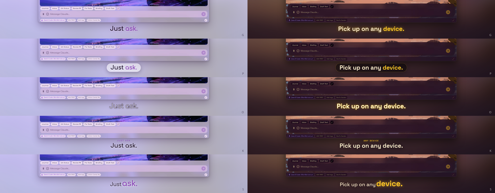

Check-in 4: the draft
The whole film, 99 seconds, at half size with the music. Everything you have approved so far is in it. A context-free reviewer went through it first; what it found and what I fixed is listed under the clip.
What is in it, section by section
| Time | Section | The host |
|---|---|---|
| 0:00 | Black, "YouCoded". The host peeks in from the left (leaning in), walks over, punches the Y. Music starts on the hit, the screen bursts into Cotton Candy Sky, "Assistant" rolls out, the group holds centred, the window rises. | Knocked back, admires the title, hops onto the title bar, ta-da at the window. "Useful. Fun. Yours." |
| 0:12 | Just ask: the Briefing chip, the reply pulling your notes. | Points at the chip, taps its foot, reads, nods, ta-da. |
| 0:18 | Describe a look: the request, then Golden Sunbreak, Strawberry Kitty, Kuromi Dreamer on the beat. | Points at the request; twirl, poof, twirl into each costume; ta-da, looks around, cheers. |
| 0:28 | Your model, your call: the four favourites, Grok picked, a question, the answer. | Walks above the picker, points, nods, taps its foot, cheers. |
| 0:34 | Your files, beside the chat: the spreadsheet attached, sorted, re-opened; then Econ 201's project view. | Points at the attach, walks over the panel, startled then happy at the sorted sheet, back for the project tree, nods at Context. |
| 0:47 | Play while it works (Golden Sunbreak): the challenge, Connect 4 with Jake, a chess move, Flappy. | Beside the games panel: "Waiting on me? Challenge a friend.", "Jake's going down.", "Or chess, if you're fancy."; back to the bar, "One sec.", dives in as the golden bird. |
| 0:57 | Every conversation, findable: the sessions menu, the resume browser narrowing on "econ", a note, a drag along the strip. | Points at the menu, walks over the browser, points, thinks over the note, follows the pill. |
| 1:05 | Pick up on any device: the phone slides in, asks to take over from Desktop, loads the chat, shows the project files. | Walks to meet the phone, points, startled at the question, nods, ta-da, hops onto the phone, cheers. |
| 1:15 | Add what you need: the WeCoded marketplace on the second drop, the Remember plugin, Install, the chip in the chat. | Startled, walks over the card, points, claps at Install, points at the chip. |
| 1:29 | The close: the window settles, "YouCoded", Free. Open source., Windows · Mac · Linux · Android, www.youcoded.ai. | Drops down beside the Y, waves: "That's me. See you in there!", cheers the final hit, powers down. |
The theme changes rotate quick-change → poof → twirl across the cuts. Every desktop scene is filmed 25% zoomed in. All faces are the new set.
Your notes on the second draft, applied
- The close is 7 seconds shorter. The track's outro is two bars shorter (42 bars, 92.5 s of music); as the window settles the host drops straight down beside the Y of "YouCoded", says its line from there (bubble to its left, off the wordmark), cheers the final hit, and powers down two seconds before the fade. It never goes back to the top. The film is 99 s.
- The lean-in: while it holds the edge its limbs are behind the edge (none drawn), one hand is drawn on the frame edge in front, and only the head and body lean in, in two steps; the limbs appear as it steps out, and the walk swings them harder.
- Bubbles: every line now stays at least 1.2 s plus a quarter second a word, and a line that would cut the previous one short waits for it. No bubble crosses a wipe. The files beat says Drop → Ask → Done in footage order; "Or chess, if you're fancy." starts as the board appears; "One sec." is gone (the dive is the gag).
- Caption: the underline is gone; the current draft uses the glow-only version (G below) while you pick.
- Also: the host stays off the chips, the model list's stars, the session tab and the marketplace filter row; the marketplace grid no longer runs into the Details click (it opened, shut and reopened); Flappy opens on the flight instead of the "Press Space" prompt.
Caption variants, the same frame on a light and a dark theme: G glow · P a soft plate behind the words · O outlined · K a small-caps kicker over the headline · S the payoff word bigger in the accent. Pick a letter (or mix: e.g. K's kicker with G's glow).

Your notes on the first draft, applied
- The host is a narrator now. Every section is a list of lines; for each one it hops to the feature it is talking about (on the title bar, or inside the window: beside the chip strip, next to the reply, right of the model list, on top of the file panel, left of the games panel, beside the resume browser, on the phone, next to the plugin page, over the chip in the chat), points while the bubble is up, and holds still otherwise. The foot-taps, thinking poses, shrugs and random glances are gone. The only extras are reactions with a visible cause: the twirl/poof on a theme flip, the dive into Flappy, the clap at Install, the cheer on the final hit.
- The lines are the narration script (with "There are hundreds." replaced by "Or make and share your own."). Each bubble stays at least 0.8 s plus a quarter second per word.
- The music runs at 112 BPM instead of 118, so every shot has about 5% more time; the film is 103 s.
- The captions: no accent bar; bigger text with a soft glow in the theme accent and an underline that draws in on the beat.
- The opening peek is two steps: a first glance with a hand on the edge, a look across, then leaning fully in, then the walk.
- Games are in Golden Sunbreak now, so the Flappy bird is the golden rig from your app, not Halftone's hooded one.
- The theme flips play a short sparkle in the key of the bar instead of the bell.
- Kuromi's blank face: a costume whose rig lacks a face now falls back to one it has.
- The close: after the cheer the host hops down to stand just left of the Y in "YouCoded" and shuts down there.
What the first reviewer found, and what changed
A context-free reviewer watched the first draft. Fixed before this one:
- "Assistant" revealed from its wrong end ("YouCodednt" for a few frames). Now wipes on left to right.
- The title sat on top of the window as it rose. It now fades as the window comes up, and the label under the window takes over once it has settled.
- The silent opening ran 8 seconds. Trimmed to 6.5 with the host moving for most of it (the peek, the walk, the punch are all still there).
- Loading screens on camera: the model picker's "Loading models…" second is cut; the Projects page opens already loaded (the six frames of the old chat before it are gone); the Kuromi flip no longer shows a blank pink window before its wallpaper lands.
- The headline said "beside the chat" over the full-screen Projects page. It now changes to "Everything in its project." there.
- The Halftone host was invisible on the dark games section. Dark costumes now carry a light rim and a stronger glow.
- The closing "YouCoded" waited for the window to finish shrinking.
Left as designed, for your call: the reviewer wanted the opening under 3 seconds and the close shorter (the close is the song's outro, 10 seconds on the final screen); it read the wipes as "off the beat" because each starts a fifth of a second before the downbeat so the new shot owns the frame on it; the Golden Sunbreak sun companion reads to it as a stray particle; the resume browser's drag-reorder is subtle at half size.